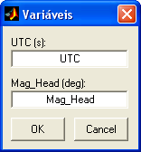
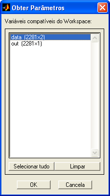
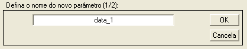

| Menu Dados |
|
Enviar
para o Workspace
Essa operação
permite enviar as matrizes de trabalho ou
parte delas para o Workspace
do MATLAB, como variáveis.
Após o envio, o
usuário poderá utilizar os dados em outros
programas ou scripts que rodem a
partir do Workspace.
Clique no menu “Dados ►
Enviar para o Workspace
... ► DADOS e PARAM ...
/ Parâmetros x e y ... ► Tudo / Intervalo / Seleção”.
- A
opção “DADOS e PARAM” envia as matrizes de trabalho com
esses nomes.
- A opção “Parâmetros x e y” envia apenas os parâmetros selecionados em “x” e “y”, com nomes definidos pelo usuário:

| Nota:
O usuário deve indicar nomes válidos de variáveis do MATLAB, ou seja,
texto alfanumérico sem acentos, iniciado com letra, sem espaço (pode
conter o
caractere "sublinhado") e que não seja nome de função ou arquivo no
caminho do MATLAB. |
- A opção “Tudo”
envia toda a extensão dos dados.
- A opção
“Intervalo” envia apenas o trecho selecionado (parte visível do
gráfico).
- A opção “Seleção”
envia apenas os pontos selecionados (marcados com círculos vermelhos).
Para importar
as matrizes do Workspace
novamente para o R_DAT,
pode-se usar a função “Obter parâmetros do Workspace”,
ou pode-se salvar matrizes “DADOS” e “PARAM” em um arquivo .mat
e carregá-lo no R_DAT.
Obter
Parâmetros do Workspace
Essa operação
permite incluir parâmetros nas matrizes de
trabalho a partir de variáveis do Workspace do MATLAB.
O usuário
poderá obter parâmetros resultantes de outros
programas ou scripts que rodem a
partir do Workspace.
Clique no menu “Dados ► Obter
parâmetros do Workspace”.
O R_DAT
analisará o Workspace
e apresentará ao usuário as variáveis compatíveis
com a matriz DADOS, que atendam aos seguintes critérios:
- Matriz ou vetor
numérico de dupla precisão; e
- Mesmo número de
linhas que a matriz DADOS.

- Selecione as variáveis
desejadas (é possível selecionar várias variáveis simultaneamente
usando o
mouse e os botões “Shift”
e “Ctrl”
do teclado, ou clicando no botão “Selecionar
tudo” para
selecionar
todas as variáveis disponíveis);
- Clique no botão “OK”
para prosseguir.
O R_DAT
interpretará cada coluna das variáveis selecionadas como
um novo parâmetro, na ordem em que apareceram na lista, e o apresentará
temporariamente no gráfico principal. Para confirmar a inclusão de cada
parâmetro,
dê um nome adequado na Caixa de Diálogo e clique “OK”. Para cancelar e
interromper
a inclusão, clique “Cancela” (os parâmetros incluídos antes do
cancelamento serão
mantidos).

Após definir um
nome e pressionar “OK”, cada novo parâmetro
será acrescentado às matrizes de trabalho antes do parâmetro “No.OBS.”.
| |
Invalidar |
Selecionar / Desselecionar |
|